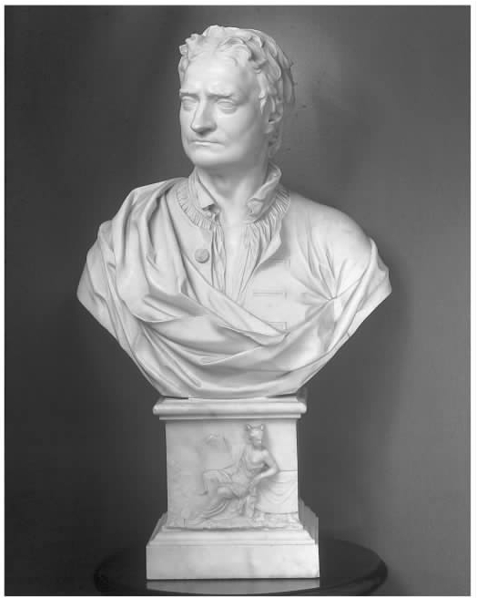

1727年3月20日（星期一）凌晨1点刚过，艾萨克·牛顿爵士便与世长辞，享年八十四岁。他从前一个星期六傍晚开始，就一直处于昏迷状态。在牛顿弥留期间，其私人医生理查德·米德在身旁负责照料。米德医生后来告诉伟大的法国哲学家伏尔泰，牛顿在临终前承认自己仍是处男之身。照顾牛顿度过临终时光的还有牛顿同母异父妹妹的女儿凯瑟琳及其丈夫约翰·孔杜伊特——后者在牛顿晚年充当过牛顿的私人助手。尽管事务缠身，孔杜伊特还是差不多一个人组织了悼念这位他最终得以认识的伟人的活动，而且我们现今所有关于牛顿私人生活的重要信息，几乎都是在孔杜伊特堪称壮举的监督之下收集起来的。1727年3月底，孔杜伊特操办了在威斯敏斯特教堂举行的牛顿的葬礼，并委托亚历山大·蒲柏撰写了牛顿的墓志铭。其后几年中，孔杜伊特授权当时英国和外国最伟大的艺术家给他心目中的英雄牛顿创作了无数的画像和半身塑像。
有好几年，孔杜伊特都在试图撰写一部翔实可靠的牛顿“全传”，但他始终未能完成这一任务。孔杜伊特曾详细记录了自己与牛顿的一些谈话。为了获得更多关于牛顿科学工作的细节，他还请几位相关人士给他寄来他们关于牛顿的回忆录。牛顿去世一周后，孔杜伊特给巴黎皇家科学院的终身秘书伯纳德·德·丰特奈尔去信，提出愿意给这位法国人提供素材，以供其撰写牛顿的《颂词》之用。孔杜伊特认为这是一个可以确立牛顿在法国的声誉的机会——这个国家一直都极不情愿承认他的姻亲牛顿在科学与数学上的卓越造诣。实际上，一直到18世纪30年代晚期，牛顿的声誉才算在法国牢固地树立起来了。在牛顿刚去世的那段时间内，孔杜伊特特别关注的是：法国学者和其他外国学者应该意识到牛顿在创立微积分上的优先权。在当时，大多数法国学者都把这一荣誉归于博学多才的德国学者戈特弗里德·莱布尼茨。孔杜伊特于1727年夏天撰写了一篇牛顿的《传略》，并于7月间寄给了丰特奈尔。
孔杜伊特的《传略》追述了牛顿的智力探索与道德生活，其笔调或有溢美之嫌，不过内容基本属实。孔杜伊特形容牛顿“思想纯洁，言行无垢”：为人极为谦逊，心肠非常慈善，性情温顺可爱，常常会为一个伤心的故事而潸然泪下；热爱自由，热爱汉诺威王室乔治一世的政权，对迫害“深恶痛绝”，而善待人与动物更是“他津津乐道的心爱话题”。孔杜伊特还记述了牛顿早期在剑桥的发展历史，并对牛顿和莱布尼茨之间的优先权之争进行了一边倒的描述：莱布尼茨不仅没有最先创立微积分，而且“对微积分从未有过足够透彻的理解，无法将其应用于宇宙体系的研究之上，而艾萨克爵士则将其应用到了这一伟大而光荣的领域”。
1727年11月，丰特奈尔撰写的《颂词》在巴黎皇家科学院宣读。丰特奈尔很好地叙述了牛顿在科学与数学上的发展，承认牛顿所有的重大发明几乎都是他二十刚出头的那几年做出的。虽然丰特奈尔并不认同《原理》中提出的许多原则，尤其是“引力”的概念，但是他对《原理》的总体意义仍然赞不绝口。丰特奈尔意识到牛顿并不认同法国伟大的数学家和哲学家勒内·笛卡儿的许多理论，但他指出牛顿和笛卡儿都曾试图将科学建立在数学的基础之上，两人都是各自时代中独特的天才人物。这篇《颂词》被立即译成英文，并且在此后一个多世纪中成了牛顿所有英文传记所依赖的主要材料。

图1 孔杜伊特自己设计的牛顿半身像。J.M.雷斯布拉克塑。
其他有关牛顿的著作也纷纷问世，其中之一就是威廉·惠斯顿的《真实记录集》。该书首次对牛顿“白衣骑士” [2] 的光辉形象提出了公开挑战。惠斯顿继牛顿之后担任了剑桥大学的卢卡斯讲座教授，但在1710年因信奉宗教异端观点而被剑桥大学开除。实际上，惠斯顿的异端观点与牛顿的很接近。惠斯顿在书中首次披露了牛顿的极端神学观点，并拿牛顿“谨慎的性情和行为”和自己“公开的行为”进行对比，说牛顿“尽管生性非常胆怯、谨慎而多疑”，但终究还是未能隐藏他在神学上的重要发现。
还在读惠斯顿的著作之前，孔杜伊特就对丰特奈尔不偏不倚地比较牛顿和笛卡儿的做法以及丰特奈尔对优先权之争的处理感到恼火。《颂词》发表后，他立即于1728年2月再次写信给几位牛顿学说的信奉者，发出这样的呼吁：“由于艾萨克·牛顿爵士是一位爱国者，所以我以为人人都应为一部旨在替他伸张正义的著作贡献一份力量。”在孔杜伊特收到的回信中，最有意思的是来自汉弗莱·牛顿（与牛顿没有亲属关系）的两封信。汉弗莱做过牛顿的文书（秘书），对牛顿撰写《原理》期间（1684——1687）的行为有着独到的见解。根据汉弗莱的叙述，牛顿有时会“突然起立，转身，像阿基米得一样，一边喊着‘我找到啦’，一边跑上楼梯，扑到桌子上奋笔疾书，连扯把椅子坐下来都顾不上”。显然，那时的牛顿只会在家里有选择地接待一小部分学者，其中包括三一学院的化学讲师约翰·弗朗西斯·维加尼。按照凯瑟琳·孔杜伊特的说法，维加尼与牛顿相处甚欢，但自从维加尼“讲了一个关于修女的下流故事”之后，两人便不再友好了。
约翰·孔杜伊特从古物学家威廉·斯蒂克利那里收到了许多极其重要的资料。斯蒂克利是在牛顿去世前不久搬到格兰瑟姆镇去住的。由于牛顿在格兰瑟姆镇上过文法公学 [3] ，而且上学期间还在当地药剂师家寄宿过，所以该地是收集有关少年牛顿的信息的理想之处。1800年，斯蒂克利收集的一些资料结集出版，不过其中并没有多少孔杜伊特的文章。然而，到了19世纪早期，新出现的资料深刻地改变了人们对牛顿的看法。1829年，让-巴蒂斯特·比奥新出的一部牛顿传记被译成英文，书中揭示牛顿在17世纪90年代早期曾出现过精神崩溃。更具破坏性的是，在19世纪30年代，人们从首任皇家天文学家约翰·弗拉姆斯蒂德的文件中发现了接二连三的令人伤心的证据，让牛顿的行为在人们心目中黯然失色。此后，维多利亚时代的人开始竞相著书立说，论述牛顿的生平与著作。其中最重要的是戴维·布鲁斯特对自己的《艾萨克·牛顿爵士的生平》（1831）进行大幅修改之后出版的《艾萨克·牛顿爵士的生平、著作与发现实录》（1855）。该书成了此后一个多世纪中牛顿的权威传记。布鲁斯特勇敢地叙述了牛顿对炼金术的投入、牛顿的非正统宗教思想，以及牛顿对朋友和敌人经常表现出的粗俗行为，但他最终还是不愿充分承认牛顿人格方面的缺憾。
19世纪70年代早期，凯瑟琳·孔杜伊特的一位远亲后代，拥有牛顿论文手稿的第五代朴次茅斯勋爵作出一项慷慨决定：将牛顿的“科学”手稿捐献给国家。剑桥大学成立了一个委员会来评估这批收藏的价值，评估结果在1888年通过一份论文目录予以公布。那些包括炼金术内容与神学内容在内的“非科学论文”被普遍认为没有多少分量，所以仍旧留在朴次茅斯家族。1936年，这批论文在苏富比拍卖行被廉价甩卖，售价仅为少得可笑的九千英镑多一点。一家联合企业从交易商那里逐渐购得了牛顿的大部分神学论文，而这些论文后来又被一位研究闪族文献学的专家及收藏家亚伯拉罕·亚胡达全部买走。亚胡达1951年去世以后，他所收藏的数目惊人的牛顿论文在经历了一场持续近十年的官司之后，为耶路撒冷希伯来大学的犹太国家与大学图书馆所拥有——虽然亚胡达本人是一位反犹太复国运动者。
伟大的经济学家约翰·梅纳德·凯恩斯参加了那次苏富比拍卖会的一部分拍卖，并下工夫获取到了牛顿所有的炼金术论文以及约翰·孔杜伊特当初持有的所有“私人”文件。到1942年，也就是牛顿诞辰三百周年的时候，凯恩斯已经拥有了牛顿的绝大部分炼金术论文以及一部分神学短文。虽然为第二次世界大战忙得不可开交，凯恩斯还是根据自己拥有的材料做了一次发言，以此作为默默纪念牛顿诞辰三百周年活动的一部分。凯恩斯所描述的牛顿要比之前传记作家笔下的牛顿独特得多：作为“迈蒙尼德派的犹太一神论者”，牛顿既不是一位“理性主义者”，也不是“现代第一位科学家和最伟大的科学家”，而是
牛顿认为自然世界与晦涩文献一起组成了一个巨大的谜团。要解开这个谜团，则需要解码“上帝留在世间的一些神秘线索。上帝留下这些线索，是为了让哲学家能够像寻宝那样找到拥有秘传之识的同道会”。凯恩斯认为，牛顿有关炼金术和神学主题的著述“显然经过了认真的钻研，方法精确缜密，陈述极其冷静”，“简直就和《原理》一样理性 ”。
20世纪晚期最有影响的两部牛顿学术传记都大量利用了手稿材料。弗兰克·曼纽尔1968年出版的《艾萨克·牛顿的画像》从心理分析的角度描述了牛顿的个性。曼纽尔的分析主要基于这样一个假设：牛顿的潜意识行为“主要会在爱与恨的情形下”表现出来。在曼纽尔看来，牛顿的心理问题根源于这一事实：他年仅三岁时母亲便再次嫁人。在此之前，牛顿已经失去了亲生父亲——他父亲在他出生前几个月就去世了。这让牛顿对他的继父充满了敌意。于是他便将自己献给了他能真心承认的唯一父亲——上帝。曼纽尔展示了牛顿小时候所遭受的精神创伤是如何被内化的，还有这位才华横溢而身世坎坷的年轻清教徒最后是如何变成18世纪早期那位老气横秋的暴君的。
理查德·S.韦斯特福尔1980年出版了更为正统的《永不歇息——艾萨克·牛顿的科学传记》。他在书中将牛顿的工作当做牛顿生活的主轴来叙述。韦斯特福尔充分利用了当时可供学者使用的大量牛顿手稿。他的《科学传记》虽然以牛顿的科学生涯“作为中心主题”，但也涉及牛顿兴趣所及的各种智力活动。韦斯特福尔非常出色地展示了牛顿的智力成就，但显而易见，他对牛顿这一方面的钦佩并没有延伸到牛顿的个人操行上。
最后，韦斯特福尔开始憎恶起这个他花了二十多年来研究其著作的人了，而他并不是第一个对这位伟人产生这种感觉的人。